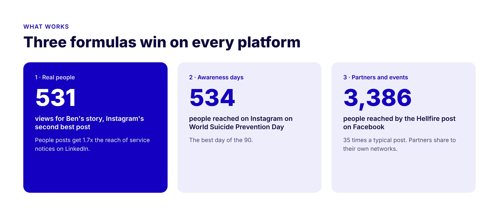
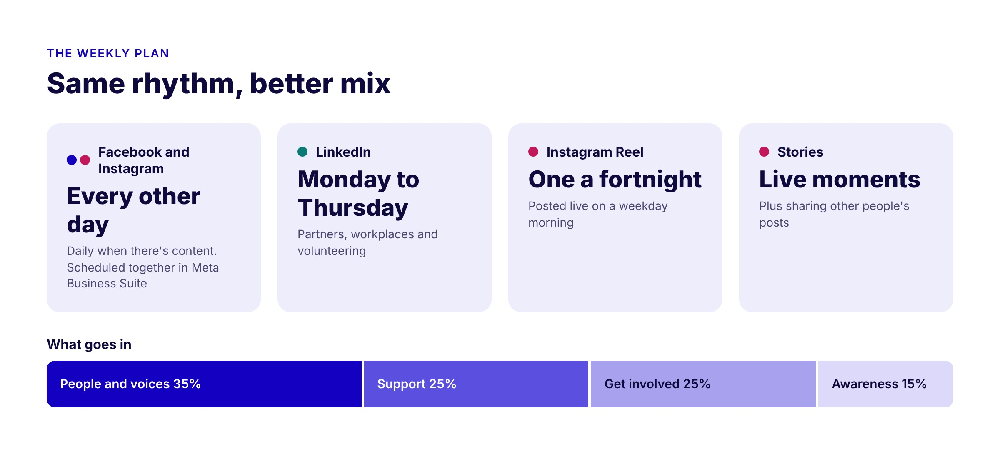
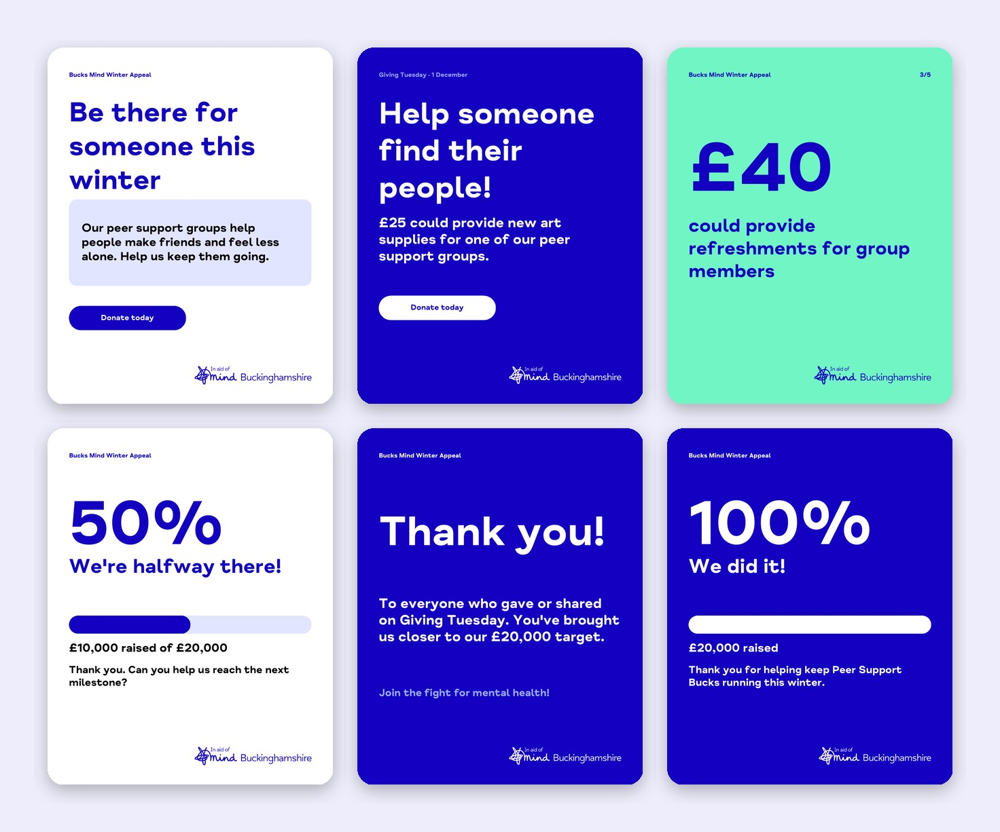
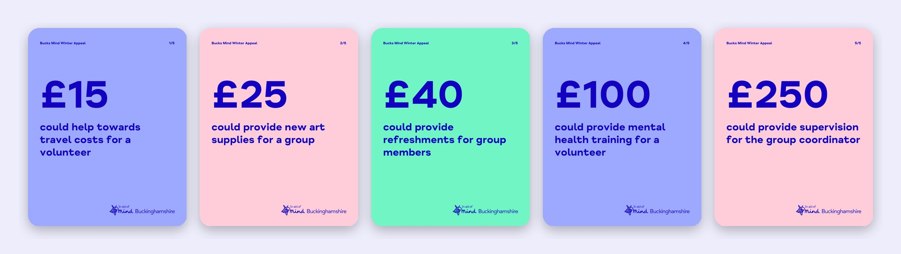

Better posts,
not more posts
I volunteer with Buckinghamshire Mind, a local mental health charity, to help its small team get more from social media. I audited their channels, turned the data into a clear plan and created their winter fundraising campaign.

Bucks Mind has great stories to tell, but its social media is run by one person in about three hours a week. Most posts reached only a small share of followers, and the team didn't have a clear view of what was working or what to post next.
Analysed 90 days of Facebook, Instagram and LinkedIn data to find what drives reach and engagement.
Built a dashboard and presented the findings to the team on a call.
Wrote a clear plan with quick wins, a weekly posting structure and campaigns to grow into, sized to the time the team actually has.
Researched what works for other charities' winter appeals, then created the full social campaign for this year's appeal.

Three types of content broke through on every platform.
Real people, awareness days, and local partners and events.
So the recommendation wasn't to post more. It was to keep the same rhythm and change what goes into it.

- One voice a week: a quote, story or supporter in every week's content.
- One in, three out: each story becomes a post for Facebook, Instagram and LinkedIn, each with its own angle.
- Easy to share: ready-to-copy posts for staff, trustees and partners, so every post reaches further.

Raising £20,000 for Peer Support Bucks.
The charity's winter appeal aimed to raise £20,000 for Peer Support Bucks, its community groups for people living with mental ill health.
My research showed that most winter appeal money comes in offline, so the campaign focused on awareness and making giving easy:
- One person's story running through the whole appeal
- "£X could pay for..." cards that show exactly what a gift does
- Progress updates and two giving peaks: Giving Tuesday and the week before Christmas
- A share pack so staff and trustees could spread the word
I created 18 feed posts and 6 Stories in the Mind brand, plus captions for each platform, a posting plan and emails for staff and trustees.


Small teams don't need more content. They need a clear picture of what works and a simple way to make more of it. Building the plan around the time the team actually had made it something they could use, not just read.